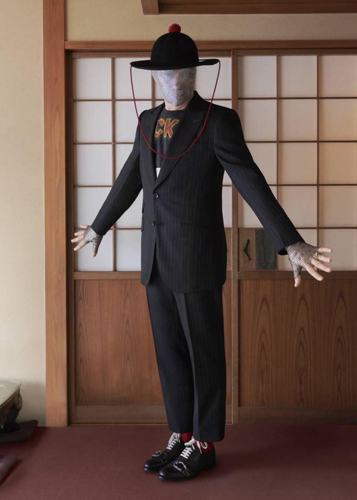

THE PERFORMERS: MICHAEL CLARK
구찌와 GQ가 준비한 오리지널 비디오 시리즈 ‘퍼포머스’의 여섯 번째 에피소드를 위해 미국의 현대 무용가이자 안무가인 마이클 클라크는 창의력과 자기표현의 감성을 찾아 일본으로 여행을 떠납니다.
“제가 4살이었을 무렵 여동생이 스코틀랜드 댄스 수업을 들었는데 거기에 우연히 들렀다가 춤을 추기 시작했어요. 제가 생각해 봐도 너무 놀라운 게 저는 항상 제 신체에 대해 남들이 어떻게 생각할지를 과도하게 의식하곤 했거든요. 굉장히 수줍은 성격이었죠.”라고 클라크가 말했습니다. 비디오 영상에는 호텔이나 공중목욕탕 등 도쿄에 위치한 다양한 장소에서 남들과는 다른 특별한 춤을 추는 그의 모습이 담겨 있습니다.
“제가 일본에 대해서 처음 인식하기 시작한 것은 데이비드 보위(David Bowie) 덕분이었어요. 그의 의상이 굉장히 인상 깊었거든요. 그는 1980년대에 자신의 어머니와 레이 보워리(Leigh Bowery)와 함께 일본 전역을 돌아다니면서 투어 공연을 하기도 했어요.”라고 그는 말을 이어 나갔습니다. “저는 보위가 가진 독특함에 동질감을 느껴요. 일본인들은 이질적인 사물에서 아름다움을 발견하는데 특히 자연 속에서 그런 것들을 찾아내죠. 그리고 그것에서 저는 경외감을 느껴요.”


Shop the Queercore brogue shoe